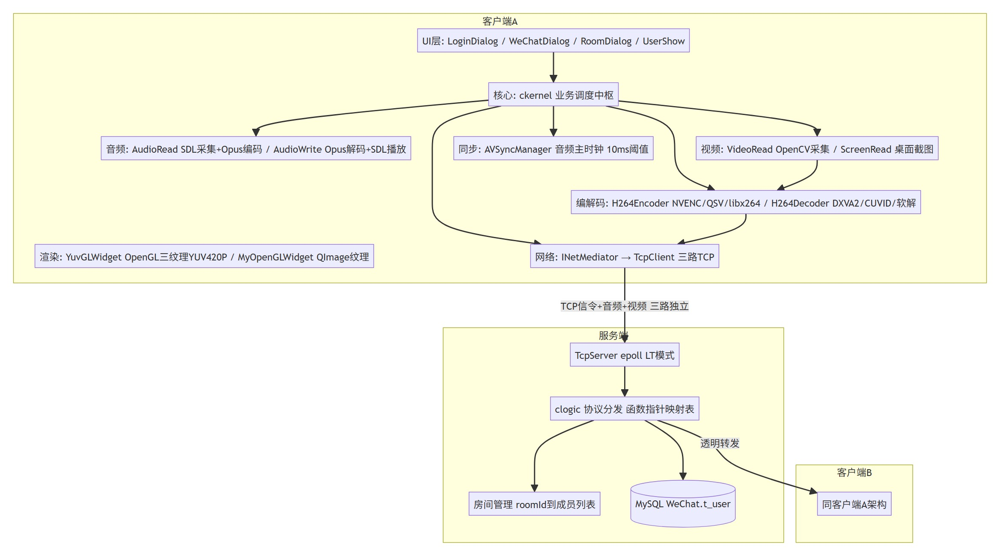
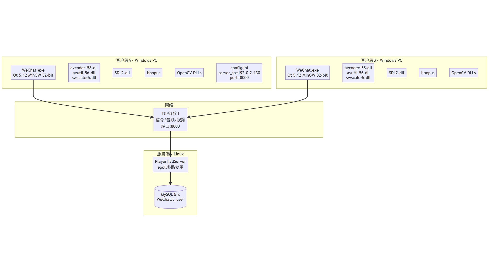

| ✅ 它是 | ❌ 它不是 |
|---|---|
| 一套可运行的桌面 C/S 视频会议系统（注册登录、房间、语音、视频、桌面共享） | 网页应用 —— 没有在线 demo，客户端是 Windows 桌面程序 |
| 约 20k 行、单人从协议设计到部署运维独立完成的学习作品 | 生产级软件 —— 未做并发压测，请勿商用 |
| 带完整工程化：Docker 部署、健康探针、隔离冒烟、SQL 注入回归、版本化迁移与回滚 | 腾讯产品的仿制品 —— 与腾讯公司无任何关联 |
[int32 小端长度][包体]，双端补齐包长合法性校验（≤0 或 >1MB 直接丢弃），修复"异常包长可被未认证客户端耗尽内存"的缺陷。ci-local.sh 四步门禁与 CI 同源、隔离冒烟栈（生产库零污染）、bcrypt 口令散列、mTLS 双向认证 + CRL 吊销体系。

更多架构图（业务流程、时序、ER、状态机、数据流等 12 类 80+ 张）见 仓库 docs/架构图/。
config.ini 的 ip 为你部署的服务端地址 → 双击 vcc-client.exesudo apt-get install build-essential libmysqlclient-dev cd server ~/Qt5.9.9/5.9.9/gcc_64/bin/qmake PlayerHallServer.pro make -j4 mysql -h127.0.0.1 -u用户名 -p < deploy/schema.sql # 建库建表 export DB_IP=127.0.0.1 DB_USER=用户名 DB_PWD=口令 DB_NAME=vcc ./PlayerHallServer # 监听 TCP 8000 + UDP 1234
也有 Docker Compose 一键部署（deploy/deploy.sh，可选 mTLS 网关），适合有 Docker 环境的服务器场景，详见 README · 部署。
从协议设计、客户端音视频链路、服务端 epoll 转发、数据库安全，到容器化部署、冒烟门禁与回滚体系，全部独立完成（约 20k 行自研代码 + 2.5 万行 BSD 第三方源码集成）。完整技术细节见 仓库 README 与 NOTICE。